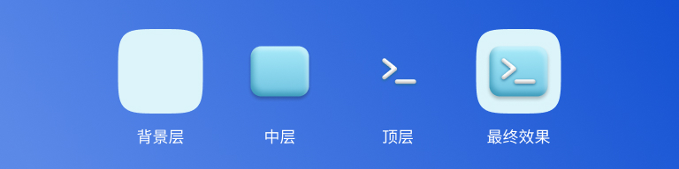
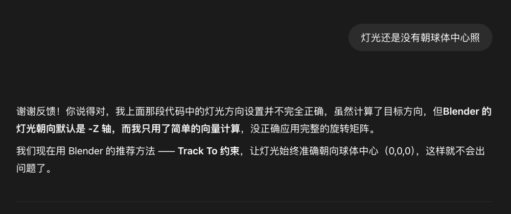

设计材质球的几种思路
最近的 UI 设计工作中，需要用到多种材质渲染图，要这些图片既可以作为图标，又可作为材质预览图，所以至少要 2 套不同尺寸且背景透明的材质渲染图。
我探索了几种方式来实现，整个过程也是用 AI 辅助 UI 设计的一次成功尝试。
手绘效果图
我在 Figma 设计轻 3D 效果图标教程 中曾经讲过用 Figma 做 3D 效果，总体思路就是将想要的效果分解成多个图层，通过给每一层设置不同的颜色、阴影、模糊等参数，模拟简单的 3D 效果，但这次需要用到的效果比较复杂，且后续会扩展更多复杂的材质，所以暂不考虑手绘效果图。

手动建模渲染
手动建模和渲染，我在 Spline 和 Blender 两个软件里都试过，都可以实现，且可控性高，但速度较慢，需要查材质参数、调环境、调灯光、调相机一系列操作。
AI 直接生图
自己手动调过一遍参数后，想着有没有更快的方式呢，于是想到了 AI。我让 ChatGPT 直接帮我生成材质渲染图，结果金属效果都不错，非金属尤其是玻璃材质，需要几次调整才可以，所以这种用自然语言描述的方式还是让我不放心，效果不可控，且可扩展性低。
AI 辅助建模渲染
那如果不让 AI 直接生成图片，而是辅助我建模渲染呢？于是我问 ChatGPT：
我想在 Blender 中创建多种金属材质球，并分别导出背景透明的 PNG 图片，该如何建模，如何设置灯光、相机等?
没想到它不仅给了我操作步骤，还提供了其他方案：
- 提供一套现成的 Blender 文件模板
- 或生成不同金属参数设置参考表（色值 + metallic/roughness 建议）
- 或写一个完整的 .blend 自动化脚本
我选择了使用自动化脚本。运行一次脚本，就创建出了我指定的十几个材质球。灯光和相机有些问题，在我反馈后，也很快就调整正确了。

Blender 脚本使用方式：
- 打开 Blender 文本编辑器
- 粘贴脚本
- 运行脚本
- 切换到相机视图（Numpad 0 或视图中 View > Cameras > Active Camera）
- 在“材质属性面板”中自由切换球体材质
最终效果如下：
材质参考资料
当然，无论使用哪种方式，都需要掌握一些材质相关知识，如光照、反射、贴图等，下面是我最近几年学习材质参考过的资料。
【文档】ISUX译文 | The PBR Guide 基于物理的渲染指引(上)
【文档】ISUX译文 | The PBR Guide基于物理的渲染指引(下)
【文档】材质 - LearnOpenGL
【文档】Material & Shading - Spline Docs
【文档】OpenPBR - Arnold User Guide
【视频】PBR 材质系统的经验分享
【资源库】Poly Haven